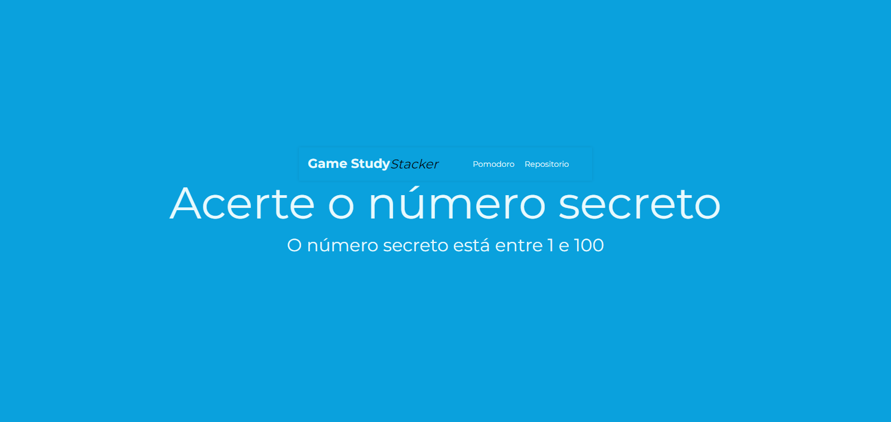
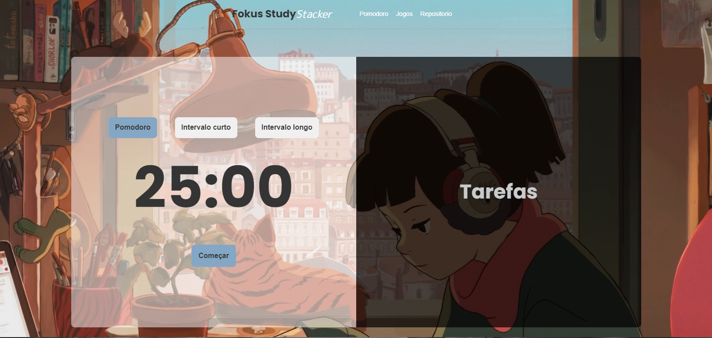

Olá! Meu nome é Ezequiel Miguel. Sou graduado em Análise e Desenvolvimento de Sistemas e atuo há mais de dois anos na área da tecnologia.
Tenho me especializado em Java com foco no ecossistema Spring, desenvolvendo soluções robustas e escaláveis. Além disso, possuo experiência com tecnologias de frontend como React e Angular, criando interfaces modernas, responsivas e voltadas à experiência do usuário.
Este projeto em andamento visa consolidar os conhecimentos adquiridos nos cursos da Alura, especialmente na formação "Desenvolva Aplicações Web com JavaScript". Utilizando tecnologias fundamentais como HTML, CSS e JavaScript, a iniciativa busca explorar recursos avançados para proporcionar uma experiência interativa e inovadora.
Reconhecimento de Voz (Web Speech API): Integramos a Web Speech API para permitir comandos por voz, oferecendo uma experiência acessível e moderna aos usuários.
Carrossel Dinâmico (Swiper JS): Utilizamos a biblioteca Swiper JS para criar um carrossel responsivo e visualmente atraente, melhorando a navegação entre os projetos.
Este repositório serve como documentação prática da formação, demonstrando a aplicação real dos conceitos aprendidos. Ele também funcionará como base para projetos futuros, com foco em usabilidade, interatividade e boas práticas de desenvolvimento web.